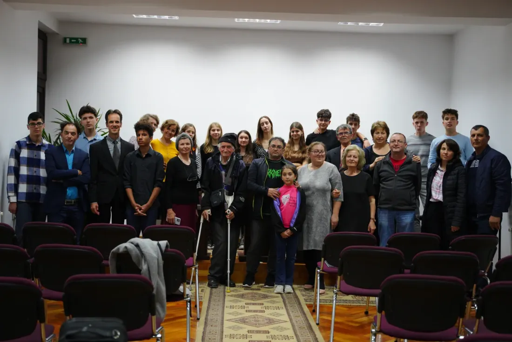

01 · Seminare în oraș
Sănătate, familie, Biblie. Aceleași lucruri pe care le facem acasă în săptămâna de misiune, doar că într-o limbă pe care o învățăm din mers.
atinge pânza
Clasa a XII-a · Liceul Internațional Integritas · Târgu Mureș
Treizeci de elevi, o lună, în satul Kusekwa din Tanzania. Lăsăm în urmă o biserică și un dispensar, pentru cele șapte sute de oameni ai școlii de acolo.
Pe pânză scrie haba na haba hujaza kibaba — puțin și puțin umple măsura. De-asta e scrisă acolo.
Actul întâi
Trei mijloace de transport, patru zile, trei granițe. Kilometrii sunt măsurați în linie dreaptă între opriri; pe șosea sunt mai mulți.
01
Autocarul
432 km
02
Avionul
5.840 km
03
Mașina
466 km
04
Am ajuns
Bariadi, regiunea Simiyu, Tanzania
Actul al doilea
O lună la Kusekwa. Seminare în oraș, vizite la familii, o mână de ajutor la școală și un stand în centru unde măsurăm tensiunea și saturația. Lucruri mici, făcute de treizeci de oameni, timp de treizeci de zile.
01 · Seminare în oraș
Sănătate, familie, Biblie. Aceleași lucruri pe care le facem acasă în săptămâna de misiune, doar că într-o limbă pe care o învățăm din mers.

02 · Din casă în casă
Mergem la familii să vedem cum trăiesc, nu să povestim după. Și lăsăm ceva în urmă: pachete, haine, lucrurile de care ne spun ei că au nevoie.
03 · La școală
Punem mâna unde e nevoie: la zidărie, la vopsit, la clasă. Treizeci de perechi de mâini, o lună.
04 · Standul medical
În centru, cu tensiometrul și pulsoximetrul: tensiune arterială, saturație de oxigen, indice de masă corporală. Pentru mulți, prima măsurătoare din viață.

Actul al treilea
Trei replici din scenariul clipului scris de clasă. Nu sunt citate ale unor persoane din Kusekwa; sunt ce am auzit că se întreabă acolo.
Muncesc zilnic sub soarele ăsta și mă întorc acasă tot sărac.
Un părinte
— Tata, mi-e foame.
Trei caiete și o pereche de încălțări costă mai mult decât are.
Elevii mei împart un creion la patru.
O profesoară
— Doamnă, aveți un creion în plus?
Alții nu ajung deloc la școală, fiindcă n-au cu ce se încălța.
Biserica mea nu e făcută din ziduri. E făcută din șapte sute de suflete.
Pastorul
— Pastore, când o să avem și noi o capelă?
Se strâng în sala școlii, pe bănci mutate în fiecare sâmbătă.
O pereche de încălțări, trei creioane și niște ziduri. Atât lipsește.
Actul al patrulea
Dispensarul ține de sănătate: cel mai apropiat spital e la zeci de kilometri. Biserica ține de tot restul — școala își primește înapoi sala, iar cele șapte sute de suflete își primesc pereții lor.
Se tipărește pe măsură ce cobori.
Actul al cincilea
Kibaba e vasul cu care se măsoară grâul în Tanzania. Proverbul de pe pânză spune că se umple din puțin și puțin. Asta facem aici.
| Biserica | de completat |
|---|---|
| Dispensarul | de completat |
| Drumul celor 30 | de completat |
| Total de strâns | de completat |
Cifrele intră aici când le primim de la școală, cu tot cu devize. Până atunci nu scriem sume pe care nu le putem dovedi.
RO77 RZBR 0000 0600 1886 6089 RO27 RZBR 0000 0600 2135 5524 RZBRROBU · Raiffeisen BankPune o cărămidă. Card, Google Pay, Apple Pay sau transfer.
Donează